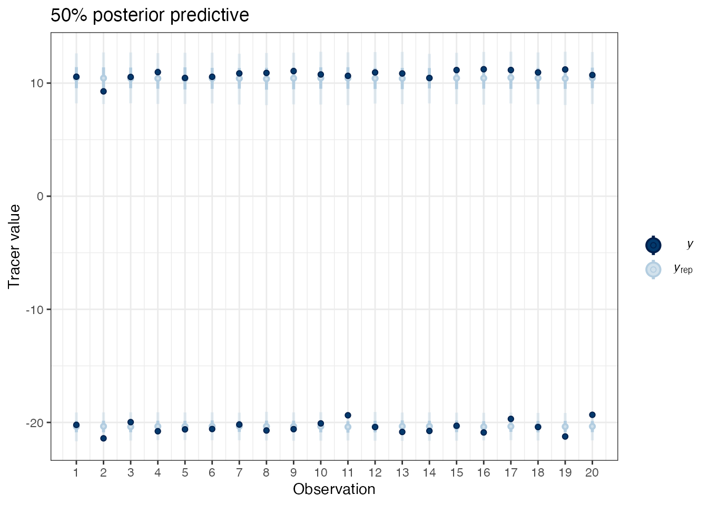

simmr: quick start guide
Andrew Parnell
2021-09-16
Source:vignettes/quick_start.Rmd
quick_start.RmdStep 2: load in the data
Some geese isotope data is included with this package. Find where it is with:
system.file("extdata", "geese_data.xls", package = "simmr")Load into R with:
library(readxl)
path = system.file("extdata", "geese_data.xls", package = "simmr")
geese_data = lapply(excel_sheets(path), read_excel, path = path)If you want to see what the original Excel sheet looks like you can run system(paste('open',path)).
We can now separate out the data into parts
targets = geese_data[[1]]
sources = geese_data[[2]]
TEFs = geese_data[[3]]
concdep = geese_data[[4]]Note that if you don’t have TEFs or concentration dependence you can set these all to the value 0 or just leave them blank in the step below.
Step 3: load the data into simmr
geese_simmr = simmr_load(mixtures = targets[, 1:2],
source_names = sources$Sources,
source_means = sources[,2:3],
source_sds = sources[,4:5],
correction_means = TEFs[,2:3],
correction_sds = TEFs[,4:5],
concentration_means = concdep[,2:3],
group = as.factor(paste('Day', targets$Time)))
Step 5: run through simmr and check convergence
geese_simmr_out = simmr_mcmc(geese_simmr)
summary(geese_simmr_out, type = 'diagnostics',
group = 1)Check that the model fitted well:
posterior_predictive(geese_simmr_out, group = 5)## Compiling model graph
## Resolving undeclared variables
## Allocating nodes
## Graph information:
## Observed stochastic nodes: 40
## Unobserved stochastic nodes: 46
## Total graph size: 190
##
## Initializing model
Step 6: look at the output
Look at the influence of the prior:
prior_viz(geese_simmr_out)
Look at the histogram of the dietary proportions:
plot(geese_simmr_out, type = 'histogram')
compare_groups(geese_simmr_out, groups = 1:4,
source_name = 'Enteromorpha')## Most popular orderings are as follows:
## Probability
## Day 428 > Day 124 > Day 398 > Day 1 0.2172
## Day 428 > Day 124 > Day 1 > Day 398 0.1678
## Day 428 > Day 398 > Day 124 > Day 1 0.1539
## Day 428 > Day 398 > Day 1 > Day 124 0.1272
## Day 428 > Day 1 > Day 124 > Day 398 0.0847
## Day 428 > Day 1 > Day 398 > Day 124 0.0767
## Day 124 > Day 428 > Day 398 > Day 1 0.0361
## Day 398 > Day 428 > Day 124 > Day 1 0.0314
## Day 124 > Day 428 > Day 1 > Day 398 0.0253
## Day 398 > Day 428 > Day 1 > Day 124 0.0181
## Day 124 > Day 398 > Day 428 > Day 1 0.0117
## Day 1 > Day 428 > Day 124 > Day 398 0.0103
## Day 398 > Day 124 > Day 428 > Day 1 0.0089
## Day 1 > Day 428 > Day 398 > Day 124 0.0072
## Day 124 > Day 1 > Day 428 > Day 398 0.0058
## Day 398 > Day 1 > Day 428 > Day 124 0.0058
## Day 1 > Day 124 > Day 428 > Day 398 0.0028
## Day 398 > Day 124 > Day 1 > Day 428 0.0022
## Day 124 > Day 398 > Day 1 > Day 428 0.0019
## Day 1 > Day 398 > Day 124 > Day 428 0.0017
## Day 398 > Day 1 > Day 124 > Day 428 0.0014
## Day 1 > Day 398 > Day 428 > Day 124 0.0008
## Day 124 > Day 1 > Day 398 > Day 428 0.0008
## Day 1 > Day 124 > Day 398 > Day 428 0.0003
For the many more options available to run and analyse output, see the main vignette via vignette('simmr')